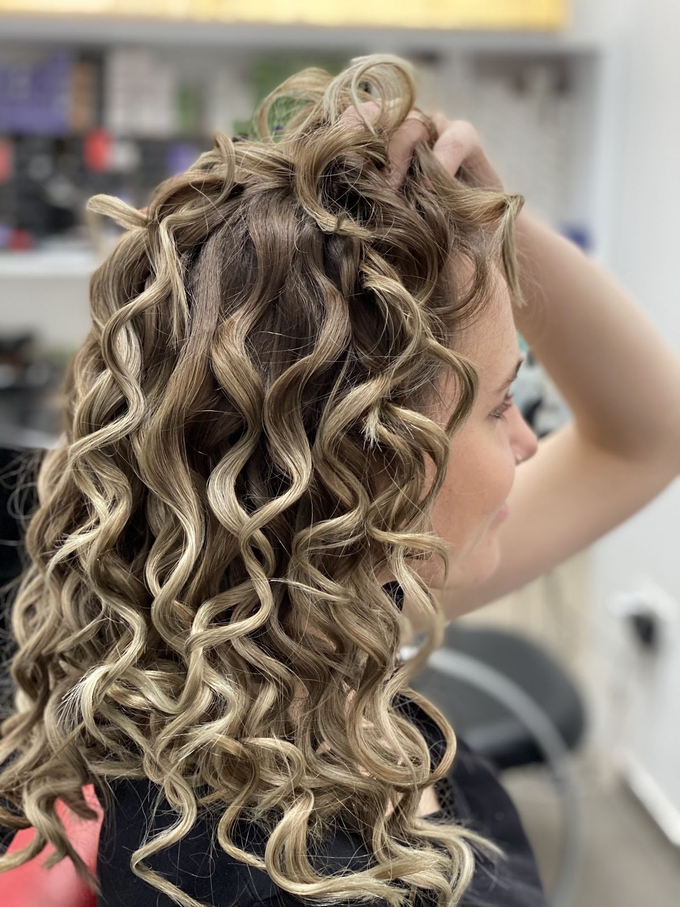

WitchBeauty
תספורת, צבע, צמות ותסרוקות ערב, אצל נטלי בשדרות מוריה 15 בחיפה.Cuts, colour, braids and evening styling, with Natalie at 15 Sderot Moriya, Haifa.

מהמספרה · תלתליםFrom the salon · curlsמה יוצא מהכיסאWhat leaves the chair
עבודות מהמספרה. גררו את המעגל, או פשוט גללו.Work from the salon. Drag the circle, or just scroll.
שלוש קווצות, צמה אחתThree strands, one braid
צמות עם חוטי צבע. בוחרים את הצבעים, ונטלי קולעת.Braids with coloured threads. You choose the colours; Natalie braids.
מוכנה לערבReady for the evening
תסרוקת ערב ואיפור, באותו כיסא.Evening hair and makeup, in the same chair.
מתוך 42 ביקורות בגוגלfrom 42 Google reviews
איפור ערבEvening makeup
״נטלי איפרה אותי לארוע ערב… והתוצאה היתה טובה מאוד״
“Natalie did my makeup for an evening event… and the result was very good”
ראשון עד שישי, עד 21:00 · שבת סגורSunday to Friday, until 21:00 · closed Saturday
״נטלי היא לא ׳מכשפה׳ אלא ׳קוסמת׳: היא הופכת שיער פגום לנוצץ.״
“Natalie isn’t a ‘witch’, she’s a ‘magician’: she turns damaged hair into shining hair.”
יופי מכשף. נטלי יודעת לתת מענה לכל אישה, לכל סוגי השיער ולכל גחמה. הכל מדוייק! החל מקביעת התור וכלה ביציאה מהמספרה ועד החזרה בשנית. מומלצת מאוד!
Bewitching beauty. Natalie knows how to answer every woman, every hair type and every whim. Everything is precise, from booking to walking out of the salon, and coming back again. Highly recommended!
נטלי ממש מקצועית קשובה ואדיבה. לא הפעם הראשונה שלי אצלה ותמיד יצאתי מרוצה.
Natalie is really professional, attentive and kind. It’s not my first time with her and I’ve always left happy.
נטלי איפרה אותי לארוע ערב. היתה מיקצועית מאוד, קשובה מאוד להעדפות שלי… והתוצאה היתה טובה מאוד, היתה לי חוויה מעולה, ממליצה מאוד!
Natalie did my makeup for an evening event. She was very professional and very attentive to my preferences… and the result was very good. I had a great experience, highly recommended!
מספרת מקצועית וטוב מאוד, מתאימה את התספורת ללקוח ומוודא שהיא באמת יפה.
A very good, professional hairdresser. She fits the cut to the client and makes sure it really looks good.
הודעה לנטליA note to Natalie
הפכו קלף, בחרו שעה, וההודעה נכתבת לבד.Turn a card, pick a time, and the message writes itself.
שדרות מוריה 1515 Sderot Moriya
על השדרה בחיפה. ראשון עד שישי.On the avenue in Haifa. Sunday to Friday.
שעותHours
מה עושים במספרה?What does the salon do?
תספורות, צבע, צמות עם חוטי צבע, תסרוקות ערב ואיפור ערב.Cuts, colour, braids with coloured threads, evening styling and evening makeup.
איך קובעים תור?How do I book?
בוואטסאפ או בטלפון לנטלי: 054-759-5754.By WhatsApp or phone to Natalie: 054-759-5754.
מתי פתוח?When are you open?
ראשון עד שישי, מהבוקר ועד 21:00. בשבת סגור.Sunday to Friday, from the morning until 21:00. Closed on Saturday.